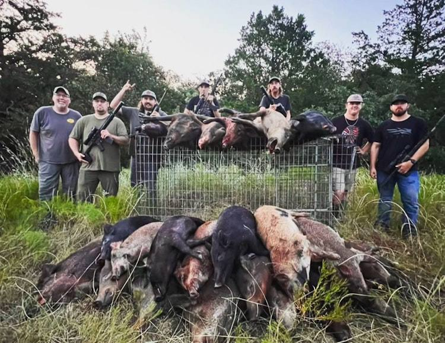
Where the road ends and the journey begins
Browse. Book. Create lasting memories.
Unlock hunting and fishing on private land, booked directly with the landowners, guides and captains who know it best.
600+ hunts, charters and land leases across the US and beyond.
Local Experts. Private Land. Remote Locations.
Pick your kind of day outside
Explore species
Hunt by species
Follow what you're after — from opening-day dove fields to late-season whitetail.
Explore species
Fish by species
Inshore, offshore or high country — pick the fish and find the captain.
Featured listings
Real places you can book right now
Live listings from real hosts — exactly as they appear on the marketplace.
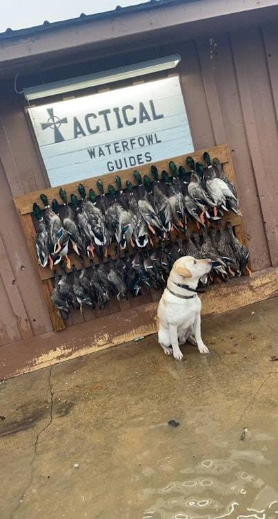
Guided Waterfowl Hunts
Palestine, Arkansas
Hosted by Nicholefrom $300Book now — Guided Waterfowl Hunts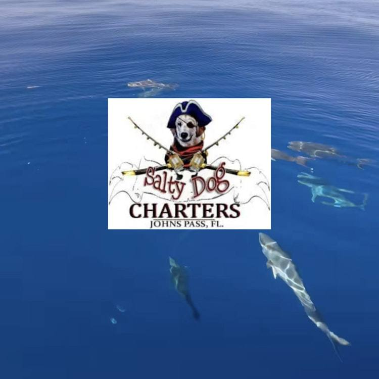
Destinations
Explore destinations
Follow the season across the country — or get on a plane and keep going.
United States
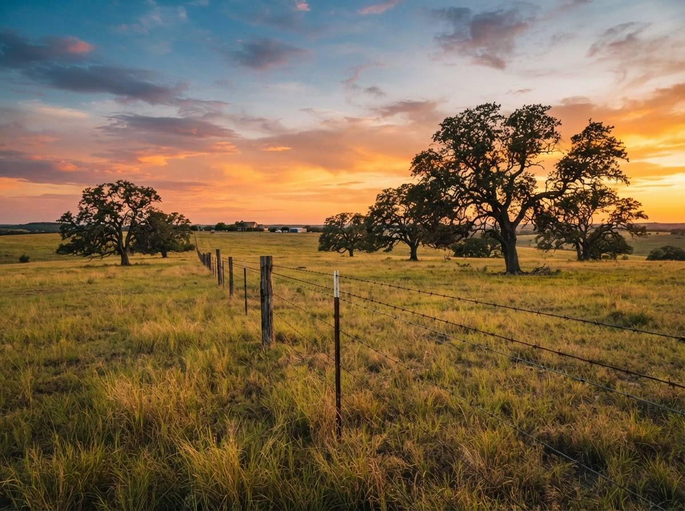
Texas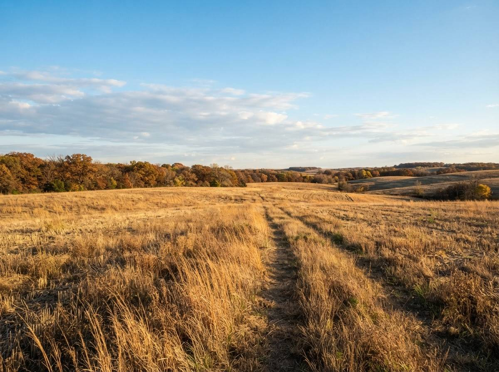
Kansas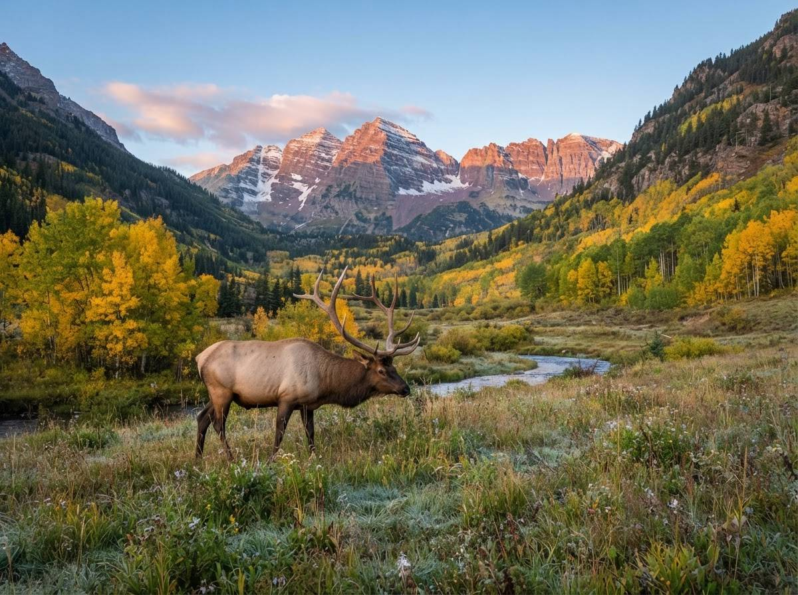
Colorado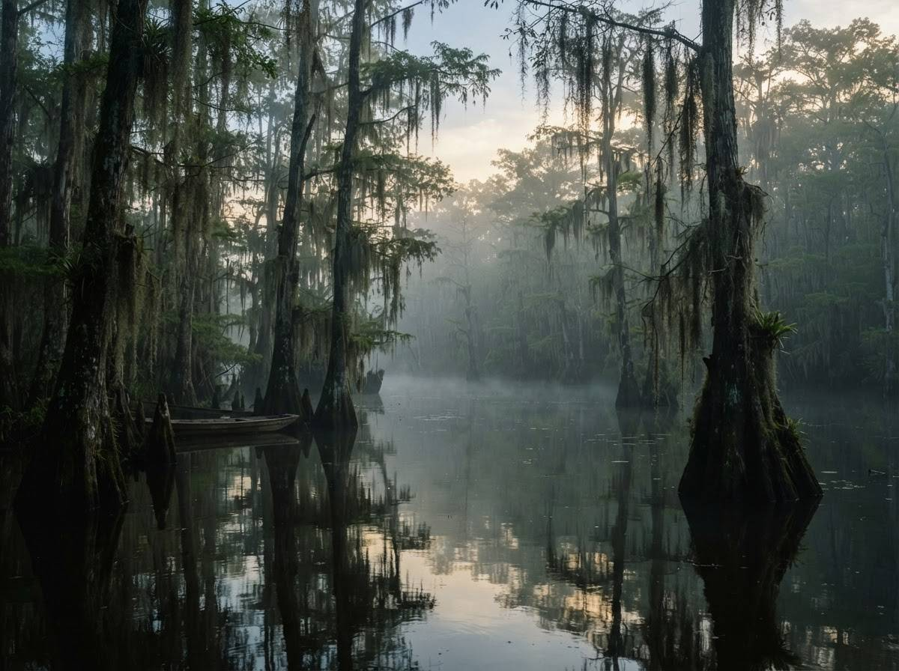
Louisiana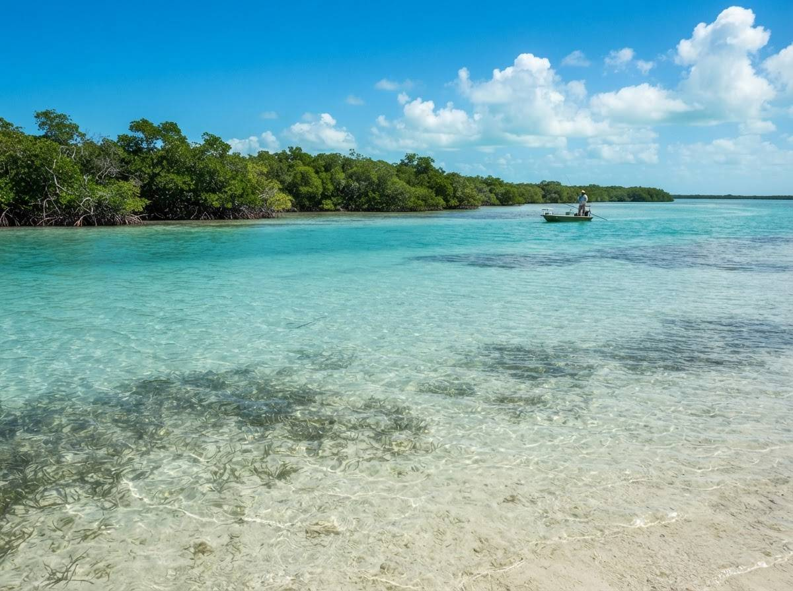
Florida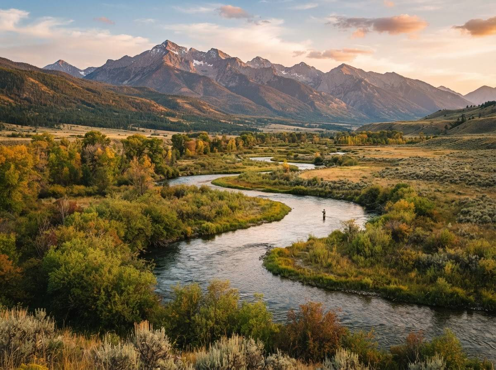
Montana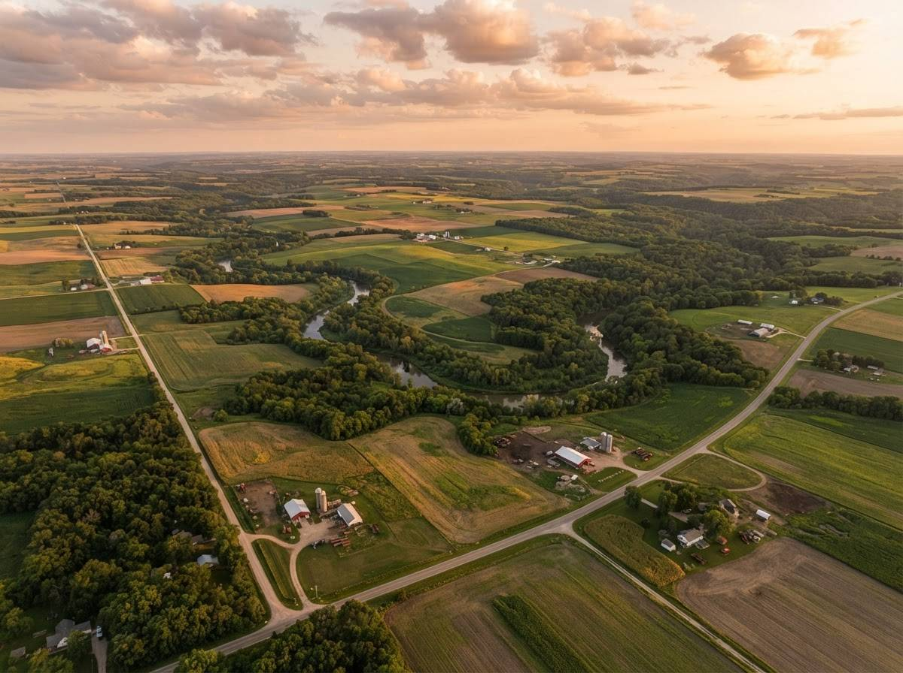
All 50 states
International
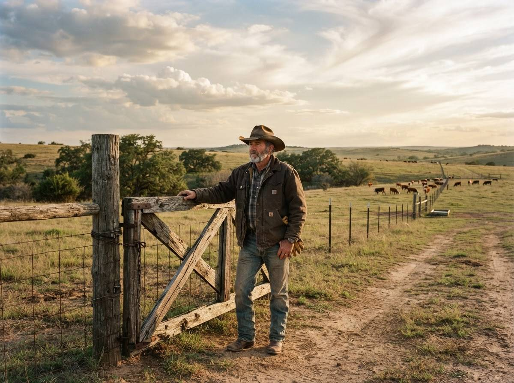
For landowners
Own hunting or fishing land? Turn it into income.
Lease dove pastures, deer leases, duck blinds and country cabins to vetted sportsmen — on your dates, your rules, your price. You set what's available and who comes through the gate.
Become a host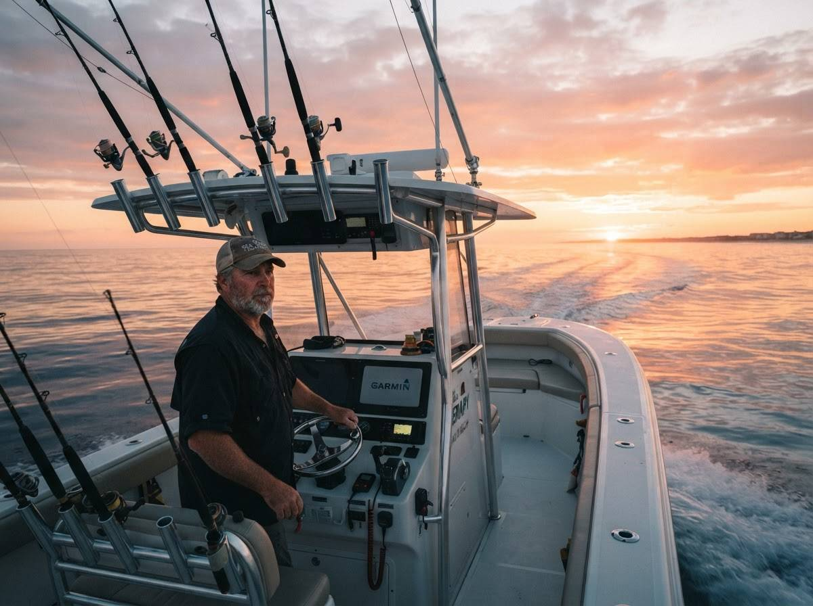
For guides & outfitters
Guides & captains, grow your book
List guided hunts, charters and multi-day trips where people are already searching for them. Publish your open dates, take bookings online and fill the slow weeks in your season.
Become a host — guides & captainsWhy UOutdoors
Built for the people who go, and the people who host
Wide range of experiences
From a morning dove field to a week-long charter, listings span hunting, fishing and time outside with family.
Easy booking process
Check availability, pick your dates and book directly with the host — no phone tag or deposit envelopes.
Support wildlife conservation
When access has value, habitat gets managed. Booking keeps working land in the hands of people who steward it.
How it works
Three steps from idea to first light
- 01
Browse
Search by activity, species or state and see what hosts have open near where you want to be.
- 02
Book
Pick your dates, send a request and confirm the details directly with your host.
- 03
Get out there
Show up, meet your host and spend the day where the road ends.
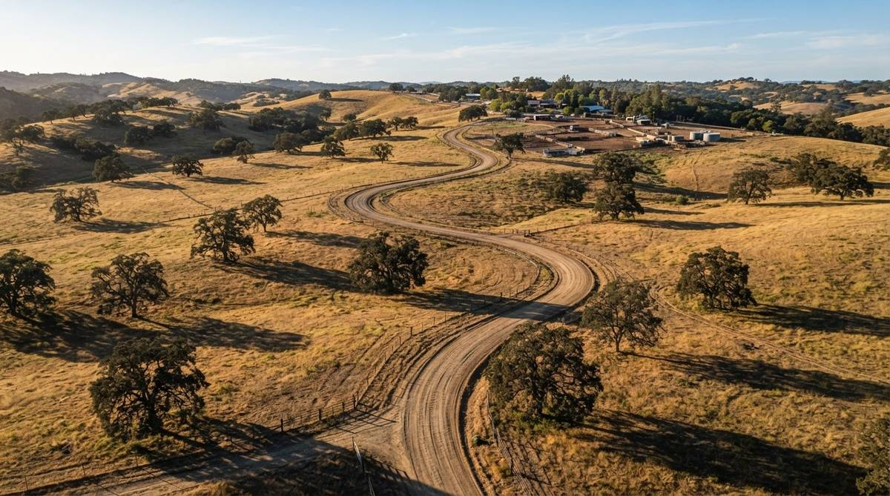
Watch the storyAbout UOutdoors
Access, opened up — and land worth keeping
Most of the best hunting and fishing in the country sits behind a gate. UOutdoors exists to open those gates on fair terms: a place where landowners, guides, outfitters and captains can offer access on their own schedule, and where sportsmen can find it without knowing somebody who knows somebody.
When access carries value, habitat gets managed, working land stays working, and the next generation still has somewhere to go. That's the whole idea — local experts, private land, remote locations.
More about usFrom the blog
Field notes, host tips and season prep
New listings and season notes, straight to your inbox
One email when it's worth sending. Unsubscribe any time.